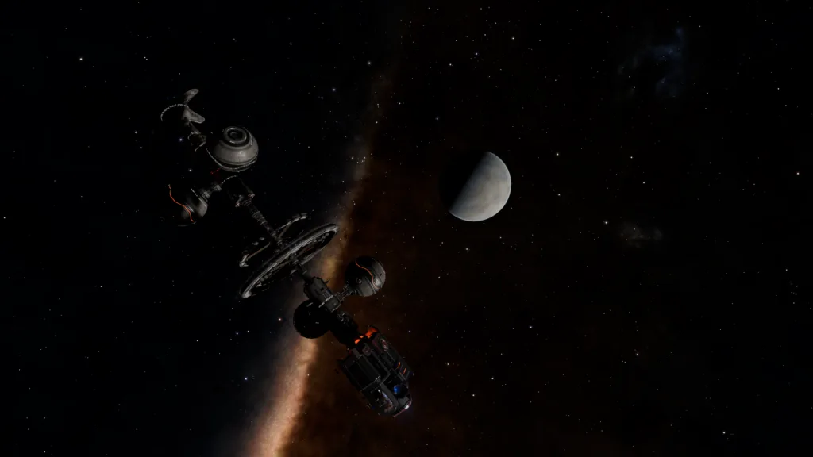
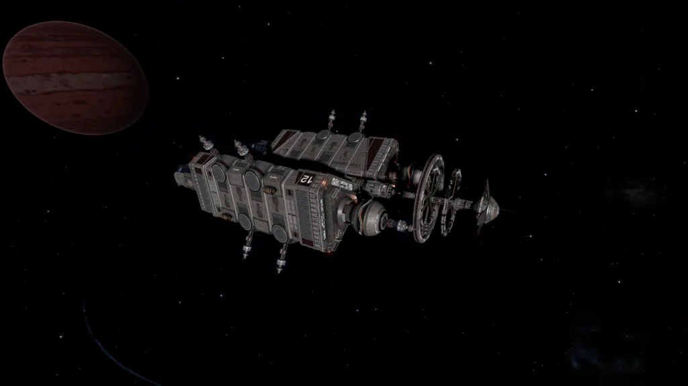
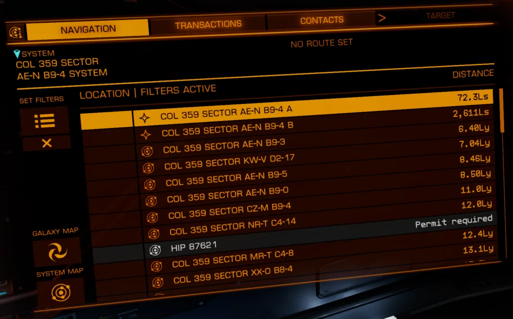
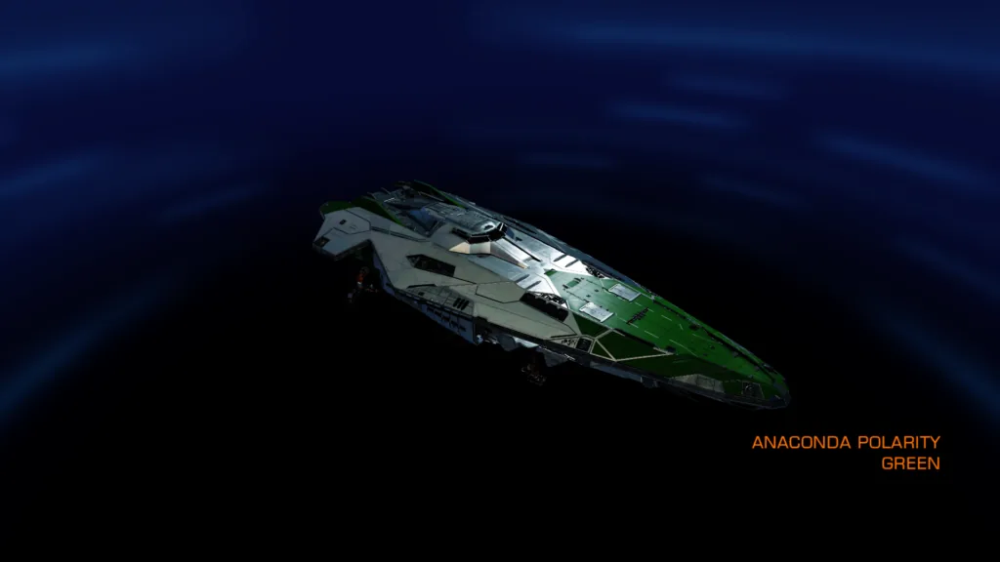
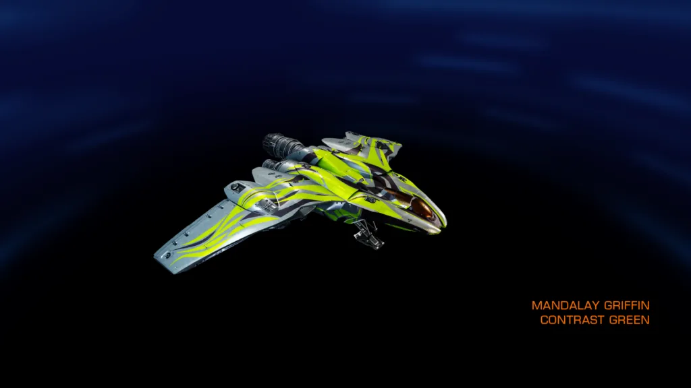
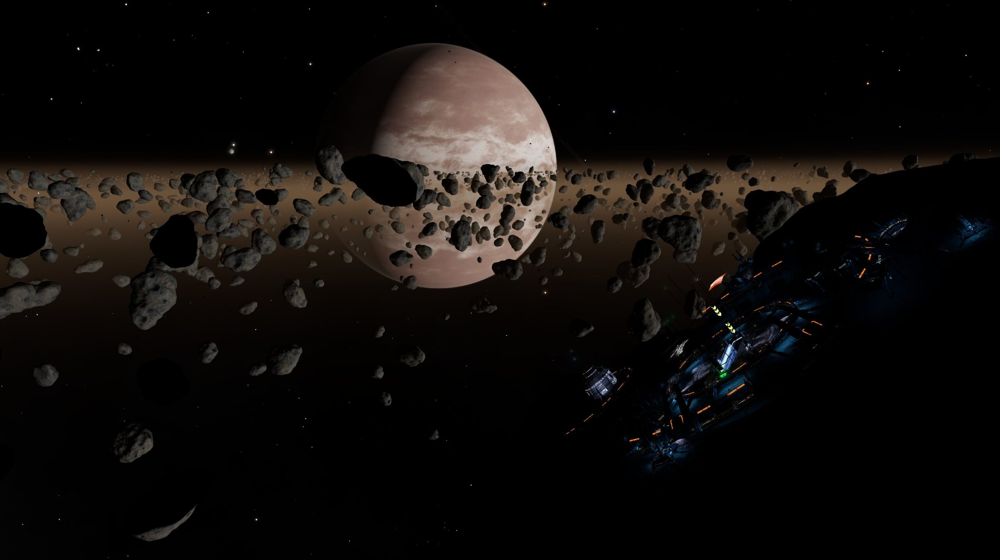
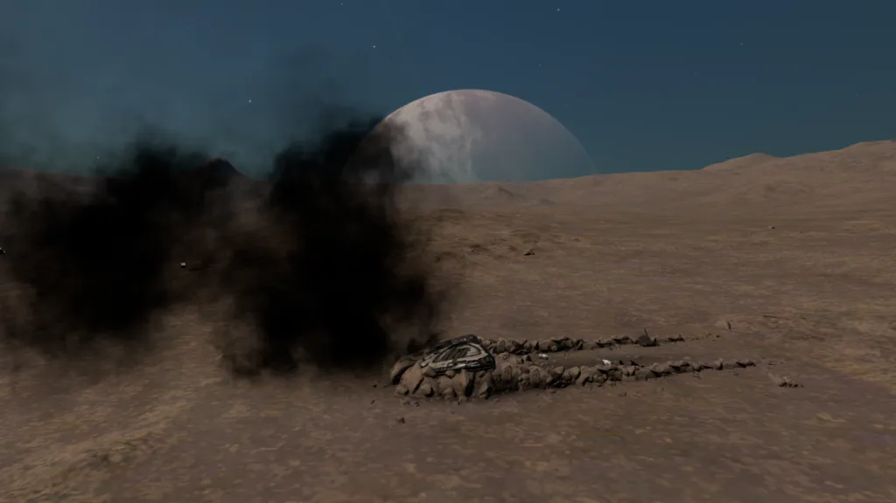
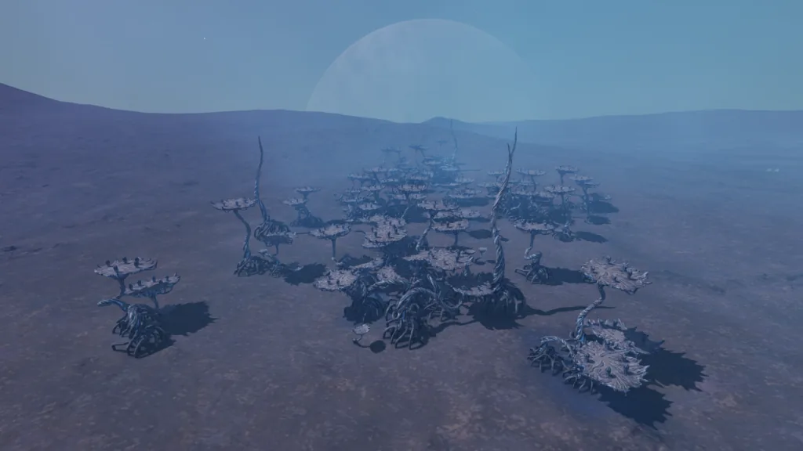
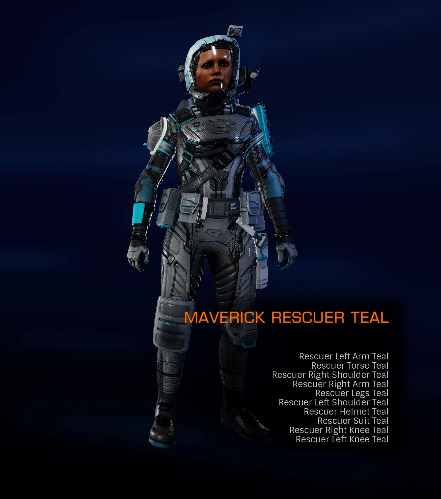

On the 28th August 3311, a social media message was transmitted ( Twitter / Facebook ) stating: “A secret to be uncovered. A trail to be followed.“, along with a short video clip.
While the clip was focused on a Listening Post, it also shows a local star believed to be either an M, K for G class, the nearby star systems as well as the Large and Small Magellanic Clouds in the background.
Almost immediately efforts were undertaken to try to identify a possible system that the Listening Post may be located in, by identifying the most visible stars and lining up star positions relative to the Magellanic Clouds.
Barely 3 hours later, a “Communications Beacon” was discovered by CMDR DoZza_nCuXoZzA, in the Jungkurara system, orbiting body A 3. Scanning the “Communications Beacon” gave the following message:
MESSAGE FAILURE CANNOT DECODE IN FULL….ENCRYPTION PROTOCOL MISSING///
…… leaving ……. ………. ……….. ….. ….. . can’t…. …. …… ……. attempt…. ….. …. …… ….., …. …… ……… … ……… ……., Alex……. ….. , ….. …… …… track….. …….. …. …… important…. …..science. …… …….. …. trail….., …. …….. location, … …. .. ……… …. ………….
010*0110 MSGJEHH GJDSGON 100%0110 0583927 96#0032
– 56jm
Image: AWIGNC8SKH GL8SAJSDY – Note: This message is no longer available.
No progress was made in decoding the message for nearly two days, until approximately 12:00 UGT on the 30th August 3311, when Professor Frank Raddix sent a message requesting help:
Commander,
An old friend in the Pilots’ Federation has allowed me to use this channel to ask you for help.
Terri Tora, a maverick in the exobiology field, has gone radio silent. I’m her assistant and sponsor. We’ve worked closely for years, specialising in rare alien flora and fauna. Her last comms message was three weeks ago. Since then I haven’t heard anything. It’s not like Terri – we usually talk every other day.
Our last conversation was quite animated. Terri said she was on the verge of uncovering ‘something big’, a discovery that would excite the wider scientific community. I can’t share much more yet – will explain further soon. But Terri has good instincts, and if she says her hunt was for something important then I believe her.
I’ve traced her last position to somewhere in the vicinity of COL 285 SECTOR TQ-A B 15-4. Has to have been within a 10 light year radius. Head out there and see if you can find anything. Look for comms beacons, relays, anything that could store information. I’ve added her transponder ID to this message, so your ship computer will filter out and automatically decode any secure comms sent from Terri.
I appreciate any help you can give.
-Professor Frank Raddix
There are only 5 systems within a 10Ly radius of the Col 285 Sector TQ-A b15-4 system, and one of those happens to be where the previous message was discovered, in the Jungkurara system.
Upon entering the Jungkurara system and rescanning the Communication Beacon in orbit of body A 3, a more complete version of the original message will be received:
(Note: The other systems had been checked and nothing of note was found in them.)
DECODING MESSAGE….TORA CODEX PROTOCOL///
Prof, I’m leaving these messages encrypted from here. I can’t let what I’m about to attempt get found out. Don’t frown, but I’ve dragged two of your newest students, Alex and Elyssia, with me to help me track this down. This is too important to exoscience. I’m following the trail to the next system, encoding the location. A mirror would come in handy.
01000110 10010110 01001110 10000110 01000110 00110110 10000010
– Terri
Image: I THINK I’VE FOUND SOMETHING! – Note: If you had previously received the original incomplete message, this more complete version will replace it in the Codex.
At first glance, the last line appears to be Binary, however when attempting to decode it, the result ends up as: FNF6
This result is obviously not correct, as the number of recognisable characters does not match the number of binary blocks. The previous line before the binary is the key here, as the binary is reversed. When we reserve the binary from the message, and then attempt to decode it, we now get the result: Albarib
Decoded example using the Canonn Decryptor
A quick search in the Galaxy Map reveals that Albarib is a system, and appears to be our next target.
Upon entering the Albarib system, a Point of Interest named “Z2A-4” can be found on body A 1, which is revealed to be a Crashed Type 9. At this point an SRV will be required, and after scanning the Crashed Ship’s Data Core another log will be received:
(Note: If you scan the Comms Control, you will only receive a message from the Professor, and not the required message below.)
DECODING MESSAGE….TORA CODEX PROTOCOL///
We were attacked by opportunist pirates while aiding Terri on her ‘little quest’. I fear this is our last message unless we’re rescued, but she asked us to encode her last transmission in the hope you find this, Prof. Frank. It’s just a bunch of letters : kjmpk rppq omplozbk.
She said it’s a two-stage encryption and to use our ship as the key, whatever that means.
Good luck and don’t be too annoyed with us next time you see us in class!
– Alex
Image: WE’VE BEEN ATTACKED!
Along with a message from Professor Raddix:
Commander,
It’s just like Terri to get herself into trouble and now she’s dragging others into her mischief. She was my brightest student, and also the most troublesome! While the rest preferred more rigorous and academic methods to study exobiology, Terri loved the field trips out into the black. She saw exobiology as an adventure. I do hope this isn’t her last.”
-Professor Frank Raddix
Image: WHAT IS TERRI UP TO?
In the message from Alex, there is a “bunch of letters“: kjmpk rppq omplozbk, and a two-stage encryption mentioned.
Along with Alex also mentioning that Terri has said “to use our ship as the key”, it was quickly figured out that the POI name “Z2A-4” could be used as a decryption key, first by applying an Atbash cipher (Z↔A), and then using Caesar cipher with a −4 shift. This gives us the result: turot moon prospect
Decoded example using the Canonn Decryptor
Searching in the Galaxy Map reveals that Turot is a system, and that Moon Prospect is a surface outpost in the Turot system, which is our next destination.
Upon entering the Turot system and travelling to Moon Prospect on body 1 a, a Communications Beacon can be found on the surface approx. 2.5km from the port, again an SRV will be required and upon scanning the Communications Beacon the following message will be received:
DECODING MESSAGE….TORA CODEX PROTOCOL///
An October Consortium science expedition using two megaships passed through here recently, it seems one of the megaships can get me to where I need to go because someone in October I know can sneak me aboard. I’m heading out again. Keep up and hopefully see you at 24 9 18 9 25 1 14 15 1 18.
– Terri
Image: GETTING CLOSER TO THE TRUTH
At the end of the message there is a string of numbers 24 9 18 9 25 1 14 15 1 18, and by converting these numbers with an A1Z26 cipher / Letter Number Code, we get the result: Xiriyanoar
Decoded example using the Canonn Decryptor
If we search the Galaxy Map, we find that there is a Xiriyanoar system, and again journey onwards.
Upon entering the Xiriyanoar system, a Listening Post can be found orbiting body B 1, and after scanning it we receive the following message:
DECODING MESSAGE….TORA CODEX PROTOCOL///
I’m dropping this beacon, I’m sure comms are being tracked now, I think someone from the last outpost has alerted ahead of me. Damn! I thought I was being careful. I can’t get caught, not when I’m this close. Encoding my location again, maybe use the Codex for this one.
Lefthand side of the Knowledge Base, 6th entry, 5th paragraph.
– Terri
Image: THEY MIGHT BE ON TO ME!
Along with another message from Professor Raddix:
Commander,
Please hurry! I fear for Terri’s safety, she seems to be on the verge of uncovering something that could radically shake-up the exobiology field and it seems she’s attracting too much interest in her little quest.
-Professor Frank Raddix
Image: I HOPE SHE’S SAFE!
The last line in the message from Terri, mentions: “Lefthand side of the Knowledge Base, 6th entry, 5th paragraph.”
If we follow these instructions, it takes us to the Generation Ships entry, and the following paragraph:"The first exception was the Golconda, discovered in the Upaniklis system with a functional colony on board, giving hope that not all generation ships still in transit will be lost causes."
Image: Codex Snippet – Generation Ships
As mentioned in the paragraph, the Upaniklis system was where the Golconda had previously been discovered, and as well as bring the only system named in the paragraph, it appears to be our next destination.
More information about the Golconda can be found in our article: The Golconda
Upon entering the Upaniklis system, a Communications Beacon can be found orbiting near the rings of body A 1, and after scanning it we receive the following message:
DECODING MESSAGE….TORA CODEX PROTOCOL///
I’m aboard. My contact came through and my sources were right, something is definitely being kept a secret but nobody knows why. I managed to scan their jump manifest but it’s incomplete, sorry.
Best thing you can do is find this ship and scan the manifest properly for all locations. I can’t transmit again for fear of being discovered. The location order is listed, so my guess is that you will only be able to locate the ship in the target systems in short intervals.
According to the manifest, it should restart a new run on 31st August at 18:00 UGT.
I’m encrypting the manifest.
If in ##doubt## your student, Vigenere, has the key.
ycxztnogbgd hbsxh
qiebfeo iox
polgbf tivk
jfugylom upr
xduobnzct yljy
– Terri
When reading the message, there appears to be 5 lines of jumbled characters, and once again, the last line of the readable message is the key to decoding them.
If we take each line of jumbled characters and try to decode them individually, by using a Vigenere cipher and using doubt as the keyword, which was alluded to in the message, we get the following results:vodyakamana three
nukamba one
marfic four
graffias two
upaniklis five
Decoded example using the Canonn Decryptor
Five system names, including the one where the message was found. If we now format them to be easier to read and re-order them according to the numbers provided, we get the following:
1 – Nukamba
2 – Graffias
3 – Vodyakamana
4 – Marfic
5 – Upaniklis
We now have the route that our target megaship is expected to travel along, starting with the Nukamba system, at 18:00 UGT / 31st August 3311.
There was a thought that the numbers could be indicating a body ID within the listed systems, however that turned out not to be the case as two of the systems ( Graffias and Marfic ) only have a pair of stars in them.
At approximately 18:00 UGT / 31st August 3311, a Point of Interest named “Cygnus” appeared in the Nukamba system.
Upon entering the POI, it was discovered to be a Beckett-class Science Vessel, and when scanning the Ship Log Uplink, the following travel itinerary was received:
Full Jump Cycle:
Nukamba
Graffias
Vodyakamana
Marfic
Upaniklis
HR 6524
Col 359 Sector AE-N B9-4
##OCTOBER ENCRYPTION ERROR##
Rendezvous with The Orion on completion.
Image: COMPLETE CYGNUS MANIFEST
When checking the manifest, it should be noted that while the five previously listed systems are present, there are also two additional systems listed: HR 6524 / Col 359 Sector AE-N b9-4
Also noted in the manifest is a “OCTOBER ENCRYPTION ERROR“. At it was unknown what this error may be, if anything, however later on it was believed to be an 8th system with its system name still encrypted.

Shortly after the Cygnus had been discovered, there was a report at approximately 22:00 UGT / 31st August 3311 that the megaship was no longer present in the Nukamba system, and was confirmed that just 4 hours after it had originally appeared, the Cygnus had vanished.
An effort to try to find the Cygnus was undertaken by searching the systems listed in its itinerary, however the megaship was unable to be located. This was something that Terri had alluded to in her previous message, when she stated that: “you will only be able to locate the ship in the target systems in short intervals“.
The Cygnus re-appeared 8 hours later in the Graffias system at 06:00 UGT / 1st September 3311.
The Cygnus was estimated to leave the Graffias system at 10:00 UGT, this time was based on how long it had stayed for in the Nukamba system, however it had disappeared and believed to have moved earlier than estimated, somewhere between 09:00 – 09:30.
The Cygnus then reappeared in the Graffias system at approximately 12:40 UGT, before departing at approximately 15:00 UGT.
The Cygnus did not seem to travel to the Vodyakamana system, possibly skipping the system entirely.
The Cygnus was spotted in the Marfic system at approximately 06:00 UGT / 2nd September 3311, and by approximately 10:30 UGT the Cygnus had departed again.
The Cygnus arrived in the Upaniklis system at 18:00 UGT / 2nd September 3311, and was estimated to depart at approximately 22:00 for its next system. However, Cygnus was present until approximately 12:00 UGT / 3rd September, at which point the Cygnus departed the Upaniklis system.
Shortly after departing its previous system, the Cygnus arrived in the HR 6524 system, at approximately 12:15 UGT / 3rd September. The Cygnus then departed the HR 6524 system at approximately 15:00 UGT.
The Cygnus arrived in the Col 359 Sector AE-N b9-4 system at approximately 10:00 UGT / 4th September 3311.
The Cygnus arrived in the HIP 87621 system, lalong with The Orion, on the 20th November 3311 at approx. 07:00 UGT.
Below is a table with the tracked arrival and departure times.All times are displayed in UGT (Universal Galactic Time):
| System | Body | Status | Arrival | Departure |
|---|---|---|---|---|
| Nukamba | A 2 | Departed | 31st Aug 18:00 | 31st Aug 22:00 |
| Graffias | A | Departed | 1st Sep 06:00 | 1st Sep 09:00 – 09:30 |
| Graffias | A | Departed | 1st Sep 12:40 | 1st Sep 15:00 |
| Vodyakamana | – | Skipped | – | – |
| Marfic | A | Departed | 2nd Sep 06:00 | 2nd Sep 10:30 |
| Upaniklis | A 2 a | Departed | 2nd Sep 18:00 | 3rd Sep 12:00 |
| HR 6524 | 1 a | Departed | 3rd Sep 12:15 | 3rd Sep 15:00 |
| Col 359 Sector AE-N b9-4 | A 2 | Departed | 4th Sep 10:00 | 20th Nov ~ 07:00 |
| HIP 87621 | 2 | Arrived | 20th Nov ~ 07:00 | TBD |
Upon travelling to the HR 6524 system another Point of Interest was found, this time named “The Orion”, orbiting body 1 a. When dropping into said POI, it is revealed to be a Sanchez-class Science Vessel, and when scanning the Ship Log Uplink, the following message was received:
I don’t know why the Captain of the Cygnus is so sloppy, it’s just the usual sweep of potential sites. We’ll wait here a little longer, I expect we’ll rendezvous at COL 359 SECTOR AE-N B9-4 to complete scans before heading into the target system again for final analysis.
Image: CYGNUS IS LATE. AGAIN.
The message from The Orion states: “I don’t know why the Captain of the Cygnus is so sloppy“, and along with the message title: “Cygnus is Late. Again“, both could possibly help explain why the Cygnus was difficult to keep track of.
Once again, the Col 359 Sector AE-N b9-4 system is mentioned, and will be our next destination, however it also mentions a “target system” which is believed to be the still encrypted system name in the Cygnus’ manifest.

After travelling to the Col 359 Sector AE-N b9-4 system, a Communications Beacon similar to the ones previously scanned can be found orbiting body A 3 a, and scanning it give the following message:
Prof,
I’ve asked my contact to drop this beacon, I’m going to try to get off the ship undetected while they’re conducting more scans. They’ve had this place permit locked for years and I’ve no idea who ‘they’ are but it’s clear the October Consortium has something to do with it otherwise how else could they get by the permit lock?
I’m not sure how long I’ll be able to stay without being discovered but from my initial scans I think I’ve stumbled onto something that will blow your mind!
– Terri
Image: I’VE FOUND IT
As well as another message from the Professor:
Commander,
This appears to be the final message from Terri. There are no more encrypted messages here. That concerns me. If I’m reading the data from this, there’s a permit-locked system neighbouring this one. But its contents aren’t registered on any cartographic maps as far as I can tell. What could be in there? What was she hunting for that is being kept secret, and who wants to keep it a secret? Any secret big enough to hide from explorers and exobiologists must mean something remarkable. I’m going to continue to dig into this – you’ll from me again once I find out useful. Something feels wrong about all of this, but I now know I can count on your help.
I’ve issued a reward to your account.
-Professor Frank Raddix
Image: WHAT DID SHE FIND?!
With Terri’s message mentioning a permit lock, and the Professor’s message also mentioning that “there’s a permit-locked system neighbouring this one“, when checking the neighbouring systems via the ships external interface with the systems filter enabled, we can see that there is indeed a permit locked system nearby, HIP 87621, which just 12.10 Ly’s away from the system that the Communications Beacons was found in.
It is believed that the HIP 87621 system was the system name that was still encrypted in the Cygnus’ manifest, also with being mentioned as the “target system” in the message from The Orion.
It was also noted that the Professor’s message seems to be missing two words (the missing words are highlighted): “you’ll hear from me again once I find out something useful“. Currently, it is unknown if this is intentional, or simply an error.

Furthermore, upon checking the local systems after scanning the Communications Beacon, it was noted that an area of 37 Ly’s in radius around the HIP 87621 system, consisting of 245 systems, has been deemed to be no longer suitable for colonisation.
After the rendezvous of both megaships in the Col 359 Sector AE-N b9-4 system, it is suspected that “the target system“, as mentioned in The Orion’s message, is indeed the permit locked HIP 87621 system.
However, as mentioned in Terri’s message, the HIP 87621 system has been permit locked for years, and with one or both megaships possibly travelling there, it now leaves us with the questions of: What is in the HIP 87621 system, and what did Terri Tori find?
On the 2nd September 3311, a Galnet was released confirming that Terri Tora’s final location is in the HIP 87621 system.
02 SEP 3311
A recent hunt for maverick exobiology scientist Terri Tora has only deepened the mystery surrounding her disappearance.
The search began after Professor Frank Raddix issued an appeal to locate his missing colleague, who was last reported pursuing “something big” for the science community. An encrypted trail of messages led search pilots across multiple systems, piecing together encrypted comms data. Thousands participated, ultimately confirming Tora’s final location at HIP 87621, a permit locked system.
Speculation about the system is rife as no third party or superpower has claimed ownership of the permit lock, leading to rumours about its true significance and why access has been restricted for so long.
Professor Raddix issued the following statement after the discovery of Tora’s last known location: “My thanks go to the many pilots who answered my call. Terri’s trail has led us somewhere we have never been able to access before. Why is access to this system restricted? Who operates the permit? And what discovery did Terri make that beyond this cloak of secrecy?”
A spokesperson for the October Consortium responded to calls regarding the presence of two of its megaships, stating that a routine survey expedition was occurring in the region. It denied knowing anything regarding Tora’s current whereabouts.
As one mystery has been answered more questions are raised, with ICE-casters and opinion piece authors demanding to know what lies within HIP 87621 and where Terri Tora is now.
Thank you to everyone who helped decipher the clues and keep track of the megaships locations.
For following the trail, the Professor included a reward consisting of 40 Million Credits and three ship paintjobs:
Note: As of 1st November 3311, the rewards appear to be still available.


On the 8th September 3311, another Galnet was released, however this time it was from Zachary Rackham requesting help with Community Goal for scanning Rocky and High Metal Content bodies, after claims of “unusual planetary signatures detected via long-range scan.“
08 SEP 3311
The mystery surrounding the permit-locked HIP 87621 system continues, with claims of unusual planetary signatures detected via long-range scan.
Many independent pilots have also reported that all colonisation has been blocked within a 37ly radius, fuelling speculation further.
While authorities remain tight-lipped, multiple independent analysts claim that at least one world within the system is exhibiting anomalous exobiological readings. These findings have prompted the galaxy’s wealthiest citizen, Zachary Rackham, to offer a lucrative incentive for explorers willing to examine the puzzle via cross-reference.
Rackham, speaking from his villa on Lake Rackham on Homeland, said:
“Whatever’s in HIP 87621 is strange enough to have the boffins scratching their heads. Therefore, I propose scouring every corner of the galaxy for similar planets. With enough data, maybe our top scientists will be able to confirm that these anomalous readings are indeed unique to this mysteriously locked system!”
“Of course, I will be funding this initiative personally. No expense spared for our brave heroes in the science and research fields!”
Independent pilots are being asked to locate and conduct full scans of Rocky and High Metal Content worlds, the same classifications as those of interest within the system. The resulting data will be collated and analysed by scientific experts sponsored by Rackham Capital Investments, with results expected to be shared publicly at a later date.
Galnet: Rackham Funds Exploration Push After HIP 87621 Discovery
On the 11th September 3311, Professor Frank Raddix sent out another message stating that “Terri Tora is still missing“.
Commander,
I’ve heard nothing from Terri since her last message regarding HIP 87621 and I’m growing increasingly concerned at her silence. It’s not like her to be so quiet, And why were October Consortium vessels in the area around the time she disappeared? Something feels very wrong about all of this.
I’m going to try to rally the exobiology community to push for answers. Perhaps with public demands for information we can force the owner of the HIP 87621 permit to revel themselves. We must find Terri!
I’ll be in touch again soon.
-Professor Frank Raddix
Image: TERRI TORA IS STILL MISSING
On the 22nd September 3311, a Galnet was released with the end of the Community Goal, and Zachary Rackham stating: “Thanks to the staggering amount of data you’ve gathered, our scientific teams are already narrowing down what makes HIP 87621 so special. Let me tell you, we’re on the brink of cracking the mystery of that system”.
22 SEP 3311
The Zachary Rackham-sponsored initiative to collect planetary scan data from across the galaxy has concluded.
Rackham Capital Investments confirmed an ‘unprecedented volume of high-quality submissions’ from independent explorers. Pilots were tasked to scan worlds matching the classification of certain planets within the permit-locked HIP 87621 system, after long-range scans revealed unusual exobiological signatures. The findings are now being analysed by researchers sponsored by RCI.
Zachary Rackham praised the pilot community for their efforts:
“I knew the galaxy’s finest explorers wouldn’t let me down. Thanks to the staggering amount of data you’ve gathered, our scientific teams are already narrowing down what makes HIP 87621 so special. Let me tell you, we’re on the brink of cracking the mystery of that system. Won’t that be marvellous?”
However, Federal Times journalist Bryanna Blanco, who for years has accused Rackham of being notorious pirate lord ‘Calico Zack’, suggested that the trillionaire’s reasons for funding this expedition are “flimsy at best.”
“The motives for this exploration campaign are not to be trusted. Rackham is many things, but altruistic is not one of them.”
On the 25th September 3311, another Galnet was released with exobiologists demanding to know what happened to Terri Tora.
25 SEP 3311
Leading voices in the exobiological community are demanding clarity on the fate of Terri Tora, the young researcher who recently went missing around HIP 87621.
Professor Frank Raddix, who originally appealed for help in locating his young partner, issued a new statement this week:
“Terri risked everything in pursuit of discovery. We deserve to know whether she is safe and what exactly she found. Continued silence from the authorities is unacceptable.”
Independent journalist Alexei Keel of Vox Galactica has published evidence linking the permit lock to billionaire investor Lexi October. October Consortium, which predominantly deals in technology, gambling circles, and high-profile investments, refused to comment when approached. Lexi’s silence has fuelled intense speculation over whether her organisation is involved with controlling access to the system.
Keel noted that the October Consortium’s resources would make it well-placed to secure influence over a site of potential scientific importance. Many now speculate that HIP 87621 contains valuable discoveries that have been secured for private interests.
Keel also pressed representatives of the Empire, Federation, and Alliance, and while each denied any connection to HIP 87621’s permit or the whereabouts of Terri Torra, he did note that they were following developments closely.
Galnet: Exobiologists Demand Answers as HIP 87621 Speculation Grows
On the 9th October 3311, Lexi October defended her organisation’s ownership of the HIP 87621 permit, stating that: “The October Consortium acquired system rights through all proper and legal channels over a decade ago”.
09 OCT 3311
Lexi October, billionaire investor and head of the October Consortium, has issued a statement clarifying her organisation’s ownership of the HIP 87621 permit.
“The October Consortium acquired system rights through all proper and legal channels over a decade ago,” October declared. “Our researchers are conducting a legitimate study of several planetary bodies. Any infringement upon these rights will be rigorously challenged through interstellar courts. Permit access is not granted lightly, nor will we tolerate attempts to undermine lawful operations.”
October also questioned the intensity of media and scientific scrutiny directed at her organisation:
“Zachary Rackham’s recent survey campaign enlisted thousands of independent pilots to scour the galaxy for planetary data. Yet Rackham has not shared the promised results with the scientific community – not a single piece of scan data. Why, then, is my organisation’s small research initiative attracting so much attention? Is it because we are not protected by the glamour of his former political ambition?”
The October Consortium has so far declined to provide specifics regarding their discoveries within HIP 87621, citing ongoing studies and confidentiality agreements. October stressed that findings would be released at an unspecified date and conclusions should be drawn responsibly, rather than speculatively.
At time of publication, HIP 87621 remains closed to independent access.
On the 14th October 3311, a Galnet was released stating: “Brewer Corporation has issued an urgent call for mined and manufactured materials to support the rapid construction of multiple new starports“.
The items requested for the Community Goal were noted as being unusual, as Bromellite and Cobalt are not currently used in colonising systems, and the descriptions for the materials being:
Bromellite, BeO, is a white oxide mineral with a wide range of uses, such as ceramic based electronics, and enhancing material properties of mechanical strength and thermal conductivity.
Cobalt, Co, atomic number 27. Melting point 1768K. Traditionally used as a blue colouring, but now mainly used for creating high temperature alloys. Also has biotech applications.
14 OCT 3311
Brewer Corporation has issued an urgent call for mined and manufactured materials to support the rapid construction of multiple new starports.
Reports have started to circulate among the pilot community of receiving internal communications from their Power contacts specifically calling for their support in relation to securing interests around HIP 87621.
While the corporation confirmed that the priority was immediate, it declined to identify their clients or intended deployment locations.
The megacorp’s CEO, Madelyn Teague, explained:
“Brewer Corporation adheres to the strictest standards of client confidentiality and therefore cannot reveal the origin of this order. What I can assure shareholders is that the sheer scale and limited timeframe of the order is considerable. While this has stressed our reserves of certain stocks, we are taking steps to ensure the order is fulfilled with the level of service Brewer Corporation is famed for.”
Brewer Corporation has nominated the Trailblazer Dream in the HIP 90578 system as the staging point for this order, and independent pilots are requested to deliver Bromellite or Cobalt to its commodity market. These materials will be sent directly to construction yards and support networks building the modular starport sections.
At the same time, a new message was received from Professor Frank Raddix.
Commander,
I’ve continued to monitor restricted channels used by superpower departments, hoping to find some mention of Terri Tora. Yeah, it’s not strictly legal but my friend’s life is at stake.
However… I’ve caught wind of something else. Multiple Powers are placing large orders for new infrastructure from Brewer Corporation. I’m also hearing chatter that October Consortium’s ownership of the HIP 87621 permit is making several influential people very unhappy. Terri might not have meant it, but she’s really kicked a hornet’s nest this time.
Pledging to one of the Powers could offer more insight on what their plans are. I feel like something consequential is brewing, and having access to Power comms is going to be useful.
I can only hope whatever is us helps us to discover what happened to Terri.
– Professor Frank Raddix
An additional message was also sent out by one of the Superpower representatives, if you were pledged to one of the related Powers.
Commander,
BREWER CORPORATION CAMPAIGN IS VITAL (Independent)
As a loyal agent pledged to an Independent Power, I’ve been ordered to contact you.
Rival Powers plan to secure territory surrounding HIP 87621. We have therefore placed a requisition order with Brewer Corporation to establish our presence that region.
We must have independent Powers present in systems around HIP 87621 and helping Brewer achieve its campaign aims will provide ports for us to control.
Commander,
BREWER CORPORATION CAMPAIGN IS VITAL (Alliance)
As a loyal agent pledged to an Alliance Power, I’ve been ordered to contact you.
Rival Powers plan to secure territory surrounding HIP 87621. We have therefore placed a requisition order with Brewer Corporation to establish our presence that region.
We need your help to deliver the supplies necessary to ensure the Alliance is on an equal footing with its rivals, no matter what HIP 87621 may contain.
Commander,
BREWER CORPORATION CAMPAIGN IS VITAL (Empire)
As a loyal agent pledged to an Imperial Power, I’ve been ordered to
contact you.
Rival Powers plan to secure territory surrounding HIP 87621. We have therefore placed a requisition order with Brewer Corporation to establish our presence that region.
We need you to ensure that Brewer meets it targets and provides the Empire with its full allocation of ports in system neighbouring HIP 87621.
Commander,
BREWER CORPORATION CAMPAIGN IS VITAL (Federation)
As a loyal agent pledged to a Federal Power, I’ve been ordered to contact you.
Rival Powers plan to secure territory surrounding HIP 87621. We have therefore placed a requisition order with Brewer Corporation to establish our presence that region.
We can’t let us rivals on the galactic stage pull the rug from under us. Make sure Brewer meets it targets and provides us with the ports we need to protect our interests around HIP 87621.
These messages were sent out again on the 15th October, however this time they came from the individual Power representatives, instead of the Superpowers.
Independent:
Commander,
BREWER CORPORATION CAMPAIGN IS VITAL (Pranav Antal)
As a loyal agent pledged to Pranav Antal, I’ve been ordered to contact you.
Rival Powers plan to secure territory surrounding HIP 87621. We have therefore placed a requisition order with Brewer Corporation to establish our presence that region.
We must have independent Powers present in systems around HIP 87621 and helping Brewer achieve its campaign aims will provide ports for us to control.
– Pranav Antal Representative
Commander, Image: BREWER CORPORATION CAMPAIGN IS VITAL (Archon Delaine)
BREWER CORPORATION CAMPAIGN IS VITAL (Archon Delaine)
As a loyal agent pledged to Archon Delaine, I’ve been ordered to contact you.
Rival Powers plan to secure territory surrounding HIP 87621. We have therefore placed a requisition order with Brewer Corporation to establish our presence that region.
We must have independent Powers present in systems around HIP 87621 and helping Brewer achieve its campaign aims will provide ports for us to control.
– Archon Delaine Representative
Commander,
BREWER CORPORATION CAMPAIGN IS VITAL (Yuri Grom)
As a loyal agent pledged to Yuri Grom, I’ve been ordered to contact you.
Rival Powers plan to secure territory surrounding HIP 87621. We have therefore placed a requisition order with Brewer Corporation to establish our presence that region.
We must have independent Powers present in systems around HIP 87621 and helping Brewer achieve its campaign aims will provide ports for us to control.
– Yuri Grom Representative
Commander,
BREWER CORPORATION CAMPAIGN IS VITAL (Li Yong-Rui)
As a loyal agent pledged to Li Yong-Rui, I’ve been ordered to contact you.
Rival Powers plan to secure territory surrounding HIP 87621. We have therefore placed a requisition order with Brewer Corporation to establish our presence that region.
We must have independent Powers present in systems around HIP 87621 and helping Brewer achieve its campaign aims will provide ports for us to control.
– Li Yong-Rui Representative
Alliance:
Commander,
BREWER CORPORATION CAMPAIGN IS VITAL (Nakato Kaine)
As a loyal agent pledged to Nakato Kaine, I’ve been ordered to contact you.
Rival Powers plan to secure territory surrounding HIP 87621. We have therefore placed a requisition order with Brewer Corporation to establish our presence that region.
We need your help to deliver the supplies necessary to ensure the Alliance is on an equal footing with its rivals, no matter what HIP 87621 may contain.
– Nakato Kaine Representative
Commander,
BREWER CORPORATION CAMPAIGN IS VITAL (Edmund Mahon)
As a loyal agent pledged to Edmund Mahon, I’ve been ordered to contact you.
Rival Powers plan to secure territory surrounding HIP 87621. We have therefore placed a requisition order with Brewer Corporation to establish our presence that region.
We need your help to deliver the supplies necessary to ensure the Alliance is on an equal footing with its rivals, no matter what HIP 87621 may contain.
– Edmund Mahon Representative
Empire:
Commander,
BREWER CORPORATION CAMPAIGN IS VITAL (Aisling Duval)
As a loyal agent pledged to Aisling Duval, I’ve been ordered to
contact you.
Rival Powers plan to secure territory surrounding HIP 87621. We have therefore placed a requisition order with Brewer Corporation to establish our presence that region.
We need you to ensure that Brewer meets it targets and provides the Empire with its full allocation of ports in systems neighbouring HIP 87621.
– Aisling Duval Representative
Commander, Image: BREWER CORPORATION CAMPAIGN IS VITAL (Arissa Lavigny-Duval)
BREWER CORPORATION CAMPAIGN IS VITAL (Arissa Lavigny-Duval)
As a loyal agent pledged to Arissa Lavigny-Duval, I’ve been ordered to
contact you.
Rival Powers plan to secure territory surrounding HIP 87621. We have therefore placed a requisition order with Brewer Corporation to establish our presence that region.
We need you to ensure that Brewer meets it targets and provides the Empire with its full allocation of ports in systems neighbouring HIP 87621.
– Arissa Lavigny-Duval Representative
Commander, Image: BREWER CORPORATION CAMPAIGN IS VITAL (Denton Patreus)
BREWER CORPORATION CAMPAIGN IS VITAL (Denton Patreus)
As a loyal agent pledged to Denton Patreus, I’ve been ordered to
contact you.
Rival Powers plan to secure territory surrounding HIP 87621. We have therefore placed a requisition order with Brewer Corporation to establish our presence that region.
We need you to ensure that Brewer meets it targets and provides the Empire with its full allocation of ports in systems neighbouring HIP 87621.
– Denton Patreus Representative
Commander,
BREWER CORPORATION CAMPAIGN IS VITAL (Zemina Torval)
As a loyal agent pledged to Zemina Torval, I’ve been ordered to
contact you.
Rival Powers plan to secure territory surrounding HIP 87621. We have therefore placed a requisition order with Brewer Corporation to establish our presence that region.
We need you to ensure that Brewer meets it targets and provides the Empire with its full allocation of ports in systems neighbouring HIP 87621.
– Zemina Torval Representative
Federation:
Commander,
BREWER CORPORATION CAMPAIGN IS VITAL (Jerome Archer)
As a loyal agent pledged to Jerome Archer, I’ve been ordered to contact you.
Rival Powers plan to secure territory surrounding HIP 87621. We have therefore placed a requisition order with Brewer Corporation to establish our presence that region.
We can’t let our rivals on the galactic stage pull the rug from under us. Make sure Brewer meets it targets and provides us with the ports we need to protect our interests around HIP 87621.
– Jerome Archer Representative
Commander, Image: BREWER CORPORATION CAMPAIGN IS VITAL (Felicia Winters)
BREWER CORPORATION CAMPAIGN IS VITAL (Felicia Winters)
As a loyal agent pledged to Felicia Winters, I’ve been ordered to contact you.
Rival Powers plan to secure territory surrounding HIP 87621. We have therefore placed a requisition order with Brewer Corporation to establish our presence that region.
We can’t let our rivals on the galactic stage pull the rug from under us. Make sure Brewer meets it targets and provides us with the ports we need to protect our interests around HIP 87621.
– Felicia Winters Representative
On the 23rd October 3311, a Galnet was released stating: “Multiple reports indicate that megaships have been spotted operating near the permit-locked system”.
23 OCT 3311
Independent observers have reported unusual activity in systems surrounding HIP 87621, intensifying rumours of covert operations in the region.
Multiple reports indicate that megaships have been spotted operating near the permit-locked system over the past week. Though no Power has formally acknowledged involvement, analysts believe this early mobilisation suggests a push for influence around HIP 87621.
Access to the system itself remains under permit lock. All independent colonisation requests for the surrounding area continue to be denied with no reasons cited. Conrad Sterling, a political correspondent for Vox Galactica, noted:
“Typically, when you see megaships mobilising on this scale it usually precedes territorial stakes being claimed. None of the Powers have formally announced such plans but pilots continue to report receiving private messages from their pledged Power representatives indicating each have a vested interest in whatever HIP 87621 is hiding.”
After a search of the systems surrounding HIP 87621, 12 Flight Operations Carrier megaships (2 of which were Military variants) were discovered to have been deployed in the area with each one believed to be aligned to a Power, presumably in preparation for each Power’s expansion into the surrounding systems.
At time of discovery, all of the megaships were found to be between 14-21 Ly’s from HIP 87621.
| System | Megaship Name | Suspected Power |
| Col 359 Sector KW-V d2-16 | The Sabretooth | Archon Delaine |
| Col 359 Sector DP-L b10-3 | Obsidian Directive | Li Yong-Rui |
| Col 359 Sector EK-L b10-4 | Enigmatic Triumph | Pranav Antal |
| Col 359 Sector ZI-N b9-3 | The Undeniable | Yuri Grom |
| Col 359 Sector MR-T c4-8 | The Sword of Perseus | Edmund Mahon |
| Col 359 Sector FK-L b10-5 | Graf Spee Victorious | Nakato Kaine |
| Col 359 Sector CE-N b9-2 | The Benevolence | Aisling Duval |
| Col 359 Sector AJ-N b9-3 | The Pride of Authority | Arissa Lavigny-Duval |
| Col 359 Sector RX-R c5-1 | Radiant Prosperity | Denton Patreus |
| Col 359 Sector AE-N b9-0 | Glorious Purpose | Zemina Torval |
| Col 359 Sector FK-L b10-3 | Rhea’s Resilience | Felicia Winters |
| Col 359 Sector ZI-N b9-1 | Onyx Bastion | Jerome Archer |
On the 28th October 3311, a new Galnet was released following the completion of the Community Goal.
28 OCT 3311
Brewer Corporation has confirmed the success of its recent campaign to acquire construction materials, with independent pilots delivering vast quantities of resources to meet its clients’ order.
CEO Madelyn Teague released a statement from Brewer’s Minerva headquarters:
“Our sincere thanks go to the many pilots who supported this campaign. The required stocks have been secured in record time, enabling us to meet the terms of this urgent order.”
Independent observers believe that the concentration of megaship traffic and the secrecy surrounding the order, together with the reported direct messages to pilots pledged to one of the twelve Powers, are strong indicators of an intention to rapidly construct a science and security enclave around HIP 87621.
Analysts have concluded that given the sheer scale of Brewer Corporation’s logistical operations deployed for this project, the enclave could be completed within just a few days.
Lexi October has remained tight-lipped following the news, with many now speculating whether she will bow to pressure from the Superpowers to remove the permit lock.
On the 30th October 3311, of the 245 systems that were previously locked out from colonisation around HIP 87621, 49 were found to have been populated, including the 12 systems that the megaships were previously found in.
| System | LY from HIP 87621 | Suspected Power |
|---|---|---|
| Col 359 Sector NR-T c4-14 | 0.88 | Yuri Grom |
| Col 359 Sector KW-V d2-17 | 5.69 | Nakato Kaine |
| Col 359 Sector NR-T c4-13 | 6.86 | Yuri Grom |
| Col 359 Sector BE-N b9-1 | 11.57 | Nakato Kaine |
| Col 359 Sector BE-N b9-0 | 12.06 | Nakato Kaine |
| Col 359 Sector AE-N b9-4 | 12.10 | Arissa Lavigny-Duval |
| Col 359 Sector RX-R c5-16 | 12.13 | Aisling Duval |
| Col 359 Sector YI-N b9-4 | 12.39 | Archon Delaine |
| Col 359 Sector RX-R c5-3 | 12.66 | Aisling Duval |
| Col 359 Sector RX-R c5-17 | 13.33 | Aisling Duval |
| Col 359 Sector BE-N b9-3 | 13.91 | Nakato Kaine |
| Col 359 Sector RX-R c5-15 | 14.23 | Aisling Duval |
| Col 359 Sector QX-R c5-11 | 14.54 | Denton Patreus |
| Col 359 Sector BE-N b9-4 | 14.68 | Archon Delaine |
| Col 359 Sector MR-T c4-8 | 14.98 | Edmund Mahon |
| Col 359 Sector QX-R c5-12 | 15.25 | Li Yong-Rui |
| Col 359 Sector QX-R c5-8 | 15.36 | Pranav Antal |
| Col 359 Sector FK-L b10-1 | 15.90 | Edmund Mahon |
| Col 359 Sector NR-T c4-17 | 16.23 | Arissa Lavigny-Duval |
| Col 359 Sector YI-N b9-5 | 16.43 | Yuri Grom |
| Col 359 Sector AE-N b9-3 | 16.52 | Zemina Torval |
| Col 359 Sector QX-R c5-10 | 16.56 | Edmund Mahon |
| Col 359 Sector ZI-N b9-3 | 16.60 | Yuri Grom |
| Col 359 Sector RX-R c5-2 | 16.63 | Denton Patreus |
| Col 359 Sector AE-N b9-5 | 16.70 | Zemina Torval |
| Col 359 Sector FK-L b10-0 | 16.76 | Felicia Winters |
| Col 359 Sector RX-R c5-0 | 16.90 | Felicia Winters |
| Col 359 Sector KW-V d2-20 | 17.37 | Aisling Duval |
| Col 359 Sector FK-L b10-2 | 17.49 | Nakato Kaine |
| Col 359 Sector ZI-N b9-2 | 17.88 | Jerome Archer |
| Col 359 Sector EK-L b10-4 | 18.84 | Pranav Antal |
| Col 359 Sector NR-T c4-15 | 18.93 | Arissa Lavigny-Duval |
| Col 359 Sector FK-L b10-4 | 18.95 | Denton Patreus |
| Col 359 Sector FK-L b10-3 | 19.15 | Felicia Winters |
| Col 359 Sector QX-R c5-13 | 19.31 | Li Yong-Rui |
| Col 359 Sector RX-R c5-4 | 19.42 | Nakato Kaine |
| Col 359 Sector BE-N b9-2 | 19.51 | Archon Delaine |
| Col 359 Sector QX-R c5-7 | 19.53 | Pranav Antal |
| Col 359 Sector AE-N b9-1 | 19.57 | Yuri Grom |
| Col 359 Sector CE-N b9-2 | 19.76 | Aisling Duval |
| Col 359 Sector AJ-N b9-4 | 19.84 | Jerome Archer |
| Col 359 Sector FK-L b10-5 | 20.12 | Nakato Kaine |
| Col 359 Sector DP-L b10-3 | 20.24 | Li Yong-Rui |
| Col 359 Sector AE-N b9-0 | 20.54 | Zemina Torval |
| Col 359 Sector RX-R c5-1 | 20.69 | Denton Patreus |
| Col 359 Sector KW-V d2-16 | 20.71 | Archon Delaine |
| Col 359 Sector AJ-N b9-3 | 20.71 | Arissa Lavigny-Duval |
| Col 359 Sector ZI-N b9-1 | 20.78 | Jerome Archer |
| Col 359 Sector CE-N b9-1 | 20.93 | Aisling Duval |
It should also be noted, that the Col 359 Sector AE-N b9-4 system where the Cygnus is currently located (as of 30th October 3311), is now populated.
As of the 13th November 3311, a new Detention Centre has been added to the area around HIP 87621, and can be found in the Col 359 Sector IB-W d2-19 system.
On the 4th November 3311, a Galnet was released stating: “The Pilots’ Federation has advised that Commanders will be able to access HIP 87621 from 16:00 UGT on the 13th of November 3311“.
06 NOV 3311
*Pilots’ Federation Alert*
The Pilots’ Federation has confirmed that licensed Commanders will be granted access to the HIP 87621 system by October Consortium.
The unexpected move has followed weeks of speculation surrounding HIP 87621, with growing interest from all three superpowers piling pressure on the megacorp. A spokesperson from within the Pilots’ Federation stated:
“The continued delay from October Consortium to relinquish permit control has only created further tension between political and scientific communities. To assuage concerns over the type of research taking place in HIP 87621, we have been invited to grant access to the system to licensed Pilots’ Federation members.”
However, Lexi October, head of the October Consortium, was less cordial in her statement to Vox Galactica:
“We have done nothing but preserve our discovery within HIP 87621 for security and scientific purposes. The continued encroachment of superpower and corporate interests sets a dangerous precedence that can only have a detrimental effect to other independent entities that have operate claimed systems.”
“I hope that our decision to allow Commanders to enter this system is accepted as a sign of good faith. Our work is legal, ethical and in full accordance with all relevant interstellar directives regarding the study of local flora.”
The Pilots’ Federation has advised that Commanders will be able to access HIP 87621 from 16:00 UGT on the 13th of November 3311.
At 16:00 UGT on the 13th November 3311, a social media message was transmitted ( Twitter / Facebook ) stating: “A trail followed, a secret now uncovered… but yet to be understood“, along with a image of a Asteroid station in a ring orbiting a Gas Giant.

At the same time, a Galnet was released confirming that access to the permit locked HIP 87621 system was now available, along with with a request from October Consortium for “exobiological scan data to help with further scientific analysis”, as well as an Inbox Message that was received by all Cmdr’s stating that they had been issued with the HIP 87621 System Permit.
13 NOV 3311
*Pilots’ Federation Alert*
The Pilots’ Federation has confirmed that members are now authorised to enter the HIP 87621 system, following months of speculation and political wrangling.
This unprecedented decision grants exclusive access to licensed Commanders, with civilian, corporate and government organisations still restricted from entering the system.
October Consortium officials explained apparent inconsistencies between previously available system data and actual astrometric data as “spoofing”, citing “security and scientific integrity” as major reasons. They have also confirmed placing a permanent exclusion on fleet carriers entering the system under the same basis.
Scientists believe the plant’s unusual biological markers may explain the long-range scan anomalies that first drew attention to the system.
Commanders who have already ventured into HIP 87621 report the discovery of an exobiological flora unlike any previously catalogued. As a result, October Consortium has now issued a call for exobiological scan data to help with further scientific analysis.
The Pilots’ Federation has encouraged all licensed members to support this initiative by conducting on-site surveys and delivering complete exobiology data scans to Vista Genomics at the Exogene Sciences asteroid base.
They have also issued a cautionary warning that the plant has so far only been found thriving on hot planets with thin atmospheres, so appropriate gear must be always worn to ensure protection.
Upon entering and scanning the HIP 87621 system, 7 POI signals were initially visible along with an Asteroid station named “Exogene Sciences” which is operated by October Consortium, however after scanning and surface mapping the 4 bodies closest to the star this figure rose to 24 POI signals. 23 of these were identified as “Biological Site” POI’s, with the remaining signal being identified as a “Crash Site” POI.
The Crash Site can be found on body 2 a, and when inspected, turned out to be a crashed Sidewinder with a message saved in it’s data core. Upon scanning the Ship’s Data Core, the following message is received:
Frank,
Gotta hope this message somehow reaches you. Don’t think it will, though.
I’ve found myself in big trouble and wrecked my ship in the process – but boy, it could be worth it. A new genus of flora we’ve never encountered before. Kept secret from us. But why? What’s so special about it?
I’m going out to collect samples for analysis. I’ve seen October Consortium ships pass overhead. They’re looking for me, no doubt. It’s only a matter of time before I‘m caught. Hopefully I can send one last transmission with data from the exobiological samples before that happens.
If you’re reading this, Frank: Press October Consortium on what they’re doing here. New exobiological finds must be shared with the scientific community. I don’t trust any company that hides their discoveries from us. Too many bad examples in the past.
Talk soon…I hope.
– Terri

One of the previously mentioned Biological Site POI’s can be found just 6 km’s away (Heading 324) from the Crash Site. When approaching the Biological Site, a bank of fog can be seen, and upon entering the fog the exobiological lifeform “Radicoida Unica” can be found within.
More information about Radicoida Unica can be found on our Radicoida article.

A list of the known Biological Site POI’s found in the HIP 87621 system, can be found in the table below, along with the coordinates and approximate size of each site.
The sites that can be seen when first entering the HIP 87621 system / without surface mapping the related bodies, are marked with a bullet point ( • ).
| Body | Coordinates | Size | |
|---|---|---|---|
| 1 | -22.4788 / -5.0172 | Small | • |
| 1 | 5.4780 / -5.8847 | Medium | |
| 1 | 80.7999 / 68.2981 | Large | |
| 2 a | 38.5455 / 102.0038 | Small | • |
| 2 a | -51.1748 / 114.8399 | Large | |
| 2 a | -37.1704 / -89.1629 | Medium | |
| 2 a | 19.0916 / -50.8769 | Small | |
| 2 b a | -8.8321 / 70.8260 | Large | |
| 2 b a | -18.0296 / 122.6854 | Medium | |
| 2 b a | 46.9238 / 72.6814 | Large | |
| 2 b a | -10.0768 / 148.7261 | Medium | |
| 2 b a | 71.9377 / 8.1711 | Small | |
| 2 b a | -48.4039 / -167.4833 | Small | |
| 2 b a | 33.9845 / -46.8463 | Small | • |
| 2 b a | 1.5105 / -66.1404 | Medium | • |
| 2 b a | -25.7545 / -123.2744 | Small | |
| 2 b b | -1.7990 / 95.6869 | Medium | • |
| 2 b b | 0.3216 / 74.9205 | Small | |
| 2 b b | -0.5845 / 128.3468 | Small | |
| 2 b b | -8.8179 / 24.7118 | Medium | |
| 2 b b | 58.2718 / -173.9599 | Small | |
| 2 b b | 67.4392 / -16.9440 | Large | |
| 2 b b | -26.0109 / -133.4292 | Large | • |
On the 20th November 3311, a new Galnet was released concerning the discovery of Radicoida Unica, stating that: “Radicoida unica can remain dormant for centuries and contains an unusually complex bio-chemical compound which may have pharmaceutical applications”.
Separately, it was noted that both The Orion and Cygnus had arrived in the HIP 87621 system.
20 NOV 3311
Speculation continues to mount around Radicoida unica, the rare exobiological discovered in HIP 87621.
Though scientific data remains tightly controlled, fragments of research are circulating among the scientific community opposed to the system’s military lockdown. The source of these research fragments is currently unconfirmed.
The source suggests that Radicoida unica can remain dormant for centuries and contains an unusually complex bio-chemical compound which may have pharmaceutical applications.
Critics argue that military control of the enclave is less about protecting a fragile discovery, and more about ensuring exclusive access to what could become the most potent biological discovery in centuries. Since the leaked reports of its unusual bio-chemical make-up, analysts note that military mobilisation has increased across the enclave with some suggesting the region could soon become a flashpoint.
It remains to be seen whether Radicoida unica’s potential merits the powers increasing their military presence in the region surrounding HIP 87621 over the past week. For now, the rumours only deepen the mystery surrounding the galaxy’s most in-demand plant.
On the 27th of November 3311 at 16:00 UGT, a new Galnet was released stating that: “HIP 87621 At Centre of Major Military Conflict”.
27 NOV 3311
Exobiological data delivered to Exogene Sciences in HIP 87621 have confirmed that a new species of flora with unique properties has been discovered on several bodies.
Allied, Imperial, Federal and Independent Powers have now deployed fleets to secure control of the enclave surrounding HIP 87621 following the discovery of Radicoida unica, with reports of the rival powers clashing in open combat across the region.
Speculation has ignited over why this flora, which has rumoured to exhibit unique bio-chemical properties during analysis, has inspired such aggressive action by all Powers. Political analysts have noted that this is the most significant military mobilisation since the Second Thargoid War.
A spokesperson for Denton Patreus stated: “Imperial interests cannot allow rivals to dictate the future of HIP 87621. Order must be maintained, and only Imperial governance has the authority to do so.”
By contrast, a Nakato Kaine staff member said: “Members of the Alliance will not sit idle while bullies seek to snatch a legally claimed system by force. We will defend equal access and resist attempts at domination.”
Federal and assorted independent Powers have also issued adversarial statements, respectively framing their involvement as necessary to protect their interests or preserve freedom from superpower control.
Military analysts have suggested they expect this military campaign to last months with the goal to occupy the 49-system enclave surrounding HIP 87621, securing exclusive control over Radicoida unica as the primary objective. Whichever power succeeds will likely be the first to benefit from the applications of this new discovery.
Each power has issued a call to arms to their pledged pilots, and two-week initiatives have begun to open their respective campaigns.
At the same time a new social media message was transmitted ( Twitter / Facebook ) stating: “A secret uncovered, a fight to be won. Choose your side!.“, along with a short video clip.
A new message was also received from Prof. Frank Raddix:
Commander,
I’ve received troubling confirmation regarding Terri Tora‘s research. The data she gathered has been seized and reclassified by October Consortium’s science division and deemed too important to share with the wider scientific community.
Terri believed passionately in the freedom of information. She wanted every discovery shared for the benefit of science and humanity alike. To see her work buried behind sealed files is a betrayal of everything she stood for.
I must not fail to support my friend now. Knowledge should never be hoarded by those in power. The galaxy deserves to know what Terri uncovered before she disappeared.
I urge you to stay vigilant, Commander. Pledging to a Power may glean more insider information in time if you have not done so already.
Don’t let this become another truth lost to politics and corporate secrecy.
– Professor Frank Raddix
Image: TERRI TORA’S WORK CLASSIFIED
If you were signed up to a power, you would also have received one of the following messages:
Independent:
Commander,
KEEP HIP 87621 INDEPENDENT (Pranav Antal)
Superpowers are converging on HIP 87621, each intent on taking it for themselves. Independent powers must not stand by and see this system locked away behind their banners.
As a loyal agent pledged to Pranav Antal, we call on you to fight for freedom. Support our fleets, repel superpower aggression, and prove that HIP 87621 and the systems within the enclave can remain beyond their control.
Register at the Freeman’s Torch megaship in Col 359 Sector PM-T C4-3 and help keep system independence alive. Markers have been placed on the Galaxy map to show where your support is most required, and merit bonuses will be issued for undermining and occupying a rival power’s system.
Following the opening campaign, our ultimate objective is to occupy the 49-system enclave surrounding HIP 87621 to ensure that we control access to this key resource. If we succeed in this objective, a custom-built pre-engineered module will be awarded to our agents, and we will be the first to benefit from the applications derived from this flora.
– Pranav Antal Representative
Commander,
KEEP HIP 87621 INDEPENDENT (Archon Delaine)
Superpowers are converging on HIP 87621, each intent on taking it for themselves. Independent powers must not stand by and see this system locked away behind their banners.
As a loyal agent pledged to Archon Delaine, we call on you to fight for freedom. Support our fleets, repel superpower aggression, and prove that HIP 87621 and the systems within the enclave can remain beyond their control.
Register at the Freeman’s Torch megaship in Col 359 Sector PM-T C4-3 and help keep system independence alive. Markers have been placed on the Galaxy map to show where your support is most required, and merit bonuses will be issued for undermining and occupying a rival power’s system.
Following the opening campaign, our ultimate objective is to occupy the 49-system enclave surrounding HIP 87621 to ensure that we control access to this key resource. If we succeed in this objective, a custom-built pre-engineered module will be awarded to our agents, and we will be the first to benefit from the applications derived from this flora.
– Archon Delaine Representative
Commander,
KEEP HIP 87621 INDEPENDENT (Yuri Grom)
Superpowers are converging on HIP 87621, each intent on taking it for themselves. Independent powers must not stand by and see this system locked away behind their banners.
As a loyal agent pledged to Yuri Grom, we call on you to fight for freedom. Support our fleets, repel superpower aggression, and prove that HIP 87621 and the systems within the enclave can remain beyond their control.
Register at the Freeman’s Torch megaship in Col 359 Sector PM-T C4-3 and help keep system independence alive. Markers have been placed on the Galaxy map to show where your support is most required, and merit bonuses will be issued for undermining and occupying a rival power’s system.
Following the opening campaign, our ultimate objective is to occupy the 49-system enclave surrounding HIP 87621 to ensure that we control access to this key resource. If we succeed in this objective, a custom-built pre-engineered module will be awarded to our agents, and we will be the first to benefit from the applications derived from this flora.
– Yuri Grom Representative
Commander,
KEEP HIP 87621 INDEPENDENT (Li Yong-Rui)
Superpowers are converging on HIP 87621, each intent on taking it for themselves. Independent powers must not stand by and see this system locked away behind their banners.
As a loyal agent pledged to Li Yong-Rui, we call on you to fight for freedom. Support our fleets, repel superpower aggression, and prove that HIP 87621 and the systems within the enclave can remain beyond their control.
Register at the Freeman’s Torch megaship in Col 359 Sector PM-T C4-3 and help keep system independence alive. Markers have been placed on the Galaxy map to show where your support is most required, and merit bonuses will be issued for undermining and occupying a rival power’s system.
Following the opening campaign, our ultimate objective is to occupy the 49-system enclave surrounding HIP 87621 to ensure that we control access to this key resource. If we succeed in this objective, a custom-built pre-engineered module will be awarded to our agents, and we will be the first to benefit from the applications derived from this flora.
– Li Yong-Rui Representative
Alliance:
Commander, Image: ALLIANCE SUPPORT REQUIRED IN HIP 87621 (Nakato Kaine)
ALLIANCE SUPPORT REQUIRED IN HIP 87621 (Nakato Kaine)
As a loyal agent pledged to Nakato Kaine, you are ordered to assist our fleets in the contested space surrounding HIP 87621. Rival Powers have deployed warships and are attempting to impose their dominance on a region that should remain accessible to all.
The Alliance will not allow others to dictate the future of HIP 87621. Your support is vital to establishing our presence in the area and defend the liberties our citizens value. The ongoing control over HIP 87621 and the systems within the enclave is at stake.
You must ensure that Alliance interests will not be ignored. Register at the Horizon’s Glow megaship in Col 359 Sector DZ-M B9-2 and join the opening campaign. Markers have been placed on the Galaxy map to show where your support is most required, and merit bonuses will be issued for undermining and occupying a rival power’s system.
Following the opening campaign, our ultimate objective is to occupy the 49-system enclave surrounding HIP 87621 to ensure that we control access to this key resource. If we succeed in this objective, a custom-built pre-engineered module will be awarded to our agents, and we will be the first to benefit from the applications derived from this flora.
– Nakato Kaine Representative
Commander, Image: ALLIANCE SUPPORT REQUIRED IN HIP 87621 (Edmund Mahon)
ALLIANCE SUPPORT REQUIRED IN HIP 87621 (Edmund Mahon)
As a loyal agent pledged to Edmund Mahon, you are ordered to assist our fleets in the contested space surrounding HIP 87621. Rival Powers have deployed warships and are attempting to impose their dominance on a region that should remain accessible to all.
The Alliance will not allow others to dictate the future of HIP 87621. Your support is vital to establishing our presence in the area and defend the liberties our citizens value. The ongoing control over HIP 87621 and the systems within the enclave is at stake.
You must ensure that Alliance interests will not be ignored. Register at the Horizon’s Glow megaship in Col 359 Sector DZ-M B9-2 and join the opening campaign. Markers have been placed on the Galaxy map to show where your support is most required, and merit bonuses will be issued for undermining and occupying a rival power’s system.
Following the opening campaign, our ultimate objective is to occupy the 49-system enclave surrounding HIP 87621 to ensure that we control access to this key resource. If we succeed in this objective, a custom-built pre-engineered module will be awarded to our agents, and we will be the first to benefit from the applications derived from this flora.
– Edmund Mahon Representative
Empire:
Commander,
HONOUR THE EMPIRE IN HIP 87621 (Aisling Duval)
The Empire must seize control around HIP 87621. Rival Powers seek to challenge Imperial influence in this region, but their ambitions will be shattered by the might of our fleets.
As an agent of Aisling Duval, you are commanded to take up arms in their name. Destroy rival vessels, crush opposition, and demonstrate that we alone possess the strength for the ongoing security of HIP 87621 and the systems within the enclave.
The honour of the Empire demands nothing less than victory. Register at the Sapphire’s Lance megaship in HIP 88965 and join the fight. Markers have been placed on the Galaxy map to show where your support is most required, and merit bonuses will be issued for undermining and occupying a rival power’s system.
Following the opening campaign, our ultimate objective is to occupy the 49-system enclave surrounding HIP 87621 to ensure that we control access to this key resource. If we succeed in this objective, a custom-built pre-engineered module will be awarded to our agents, and we will be the first to benefit from the applications derived from this flora.
– Aisling Duval Representative
Commander, Image: HONOUR THE EMPIRE IN HIP 87621 (Arissa Lavigny-Duval)
HONOUR THE EMPIRE IN HIP 87621 (Arissa Lavigny-Duval)
The Empire must seize control around HIP 87621. Rival Powers seek to challenge Imperial influence in this region, but their ambitions will be shattered by the might of our fleets.
As an agent of Arissa Lavigny-Duval, you are commanded to take up arms in their name. Destroy rival vessels, crush opposition, and demonstrate that we alone possess the strength for the ongoing security of HIP 87621 and the systems within the enclave.
The honour of the Empire demands nothing less than victory. Register at the Sapphire’s Lance megaship in HIP 88965 and join the fight. Markers have been placed on the Galaxy map to show where your support is most required, and merit bonuses will be issued for undermining and occupying a rival power’s system.
Following the opening campaign, our ultimate objective is to occupy the 49-system enclave surrounding HIP 87621 to ensure that we control access to this key resource. If we succeed in this objective, a custom-built pre-engineered module will be awarded to our agents, and we will be the first to benefit from the applications derived from this flora.
– Arissa Lavigny-Duval Representative
Commander,
HONOUR THE EMPIRE IN HIP 87621 (Denton Patreus)
The Empire must seize control around HIP 87621. Rival Powers seek to challenge Imperial influence in this region, but their ambitions will be shattered by the might of our fleets.
As an agent of Denton Patreus, you are commanded to take up arms in their name. Destroy rival vessels, crush opposition, and demonstrate that we alone possess the strength for the ongoing security of HIP 87621 and the systems within the enclave.
The honour of the Empire demands nothing less than victory. Register at the Sapphire’s Lance megaship in HIP 88965 and join the fight. Markers have been placed on the Galaxy map to show where your support is most required, and merit bonuses will be issued for undermining and occupying a rival power’s system.
Following the opening campaign, our ultimate objective is to occupy the 49-system enclave surrounding HIP 87621 to ensure that we control access to this key resource. If we succeed in this objective, a custom-built pre-engineered module will be awarded to our agents, and we will be the first to benefit from the applications derived from this flora.
– Denton Patreus Representative
Commander,
HONOUR THE EMPIRE IN HIP 87621 (Zemina Torval)
The Empire must seize control around HIP 87621. Rival Powers seek to challenge Imperial influence in this region, but their ambitions will be shattered by the might of our fleets.
As an agent of Zemina Torval, you are commanded to take up arms in their name. Destroy rival vessels, crush opposition, and demonstrate that we alone possess the strength for the ongoing security of HIP 87621 and the systems within the enclave.
The honour of the Empire demands nothing less than victory. Register at the Sapphire’s Lance megaship in HIP 88965 and join the fight. Markers have been placed on the Galaxy map to show where your support is most required, and merit bonuses will be issued for undermining and occupying a rival power’s system.
Following the opening campaign, our ultimate objective is to occupy the 49-system enclave surrounding HIP 87621 to ensure that we control access to this key resource. If we succeed in this objective, a custom-built pre-engineered module will be awarded to our agents, and we will be the first to benefit from the applications derived from this flora.
– Zemina Torval Representative
Federation:
Commander, Image: FEDERAL SECURITY OPERATION IN HIP 87821 (Jerome Archer)
FEDERAL SECURITY OPERATION IN HIP 87821 (Jerome Archer)
The Federation requires your assistance in HIP 87621, where rival Powers are threatening the balance of security in the region. Federal assets have been deployed, but additional combat support is needed from trusted agents pledged to Jerome Archer.
Your task is clear: engage hostile forces, protect Federal operations, and ensure that our ongoing claim to HIP 87621 and the systems within the enclave are not undermined. This is about safeguarding the Federation’s interests and the stability of our citizens’ future.
Register at The Ironbridge megaship in Col 359 Sector JW-V D2-31 and push back the aggressors. Markers have been placed on the Galaxy map to show where your support is most required, and merit bonuses will be issued for undermining and occupying a rival power’s system.
Following the opening campaign, our ultimate objective is to occupy the 49-system enclave surrounding HIP 87621 to ensure that we control access to this key resource. If we succeed in this objective, a custom-built pre-engineered module will be awarded to our agents, and we will be the first to benefit from the applications derived from this flora.
– Jerome Archer Representative
Commander, Image: FEDERAL SECURITY OPERATION IN HIP 87821 (Felicia Winters)
FEDERAL SECURITY OPERATION IN HIP 87821 (Felicia Winters)
The Federation requires your assistance in HIP 87621, where rival Powers are threatening the balance of security in the region. Federal assets have been deployed, but additional combat support is needed from trusted agents pledged to Felicia Winters.
Your task is clear: engage hostile forces, protect Federal operations, and ensure that our ongoing claim to HIP 87621 and the systems within the enclave are not undermined. This is about safeguarding the Federation’s interests and the stability of our citizens’ future.
Register at The Ironbridge megaship in Col 359 Sector JW-V D2-31 and push back the aggressors. Markers have been placed on the Galaxy map to show where your support is most required, and merit bonuses will be issued for undermining and occupying a rival power’s system.
Following the opening campaign, our ultimate objective is to occupy the 49-system enclave surrounding HIP 87621 to ensure that we control access to this key resource. If we succeed in this objective, a custom-built pre-engineered module will be awarded to our agents, and we will be the first to benefit from the applications derived from this flora.
– Felicia Winters Representative
Earlier in the day it had been noted that the Powers had moved into the populated systems surrounding HIP 87621, it was later discovered that there were also four new Megaships present in the area, which seem to have been used as a base for the new conflicts.
On the 11th December 3311, a Galnet was released, stating that: “Radicoida unica has been confirmed by Vista Genomics as a wholly unique species, with early genetic indicators suggesting potential advancements once fully understood.”
11 DEC 3311
Conflict continues across the 49-system enclave surrounding HIP 87621, with military forces from all major powers showing no signs of a ceasefire after two weeks of heavy fighting.
Ernesto Rios, a freelance war correspondent for Vox Galactica, reported:
“Although the Empire appears to be the dominant force across the enclave after this initial campaign, it’s becoming clear that this conflict concerns far more than territorial influence. Radicoida unica has been confirmed by Vista Genomics as a wholly unique species, with early genetic indicators suggesting potential advancements once fully understood.”
“Given the scale of the mobilisation across the enclave, it is possible that certain details of its properties are known only to a select few within senior leadership circles.”
Military analysts note that the strategic and tactical situation shifts daily. The first week saw aggressive offensives from all sides, placing all fortified positions at risk as few efforts were directed into defensive action. Rapid strategic adjustments soon followed, with most Powers reinforcing key footholds to avoid being overrun.
By the second week, a more balanced pattern of defensive and offensive operations had emerged, alongside rumours of temporary concords between smaller Powers against larger rivals within the enclave.
All Powers involved in the enclave battle have issued urgent calls for pledged supporters to participate, while encouraging unaffiliated pilots to align themselves to a cause.
Leaked internal communications suggest the conflict will continue until one Power secures dominance across the 49-system enclave, confirming some analyst reports that the Powers wants strategic control over HIP 87621 for themselves. Powers are now targeting each other, regardless of their superpower alignment.
According to Vox Galactica’s most recent assessment by Conrad Sterling, the following three Powers currently control the largest number of systems in the opening phase:
Rank 1: Aisling Duval – 6 systems
Rank 2: Nakato Kaine – 5 systems
Rank 3: Pranav Antal/Arissa Lavigny-Duval – 3 systems
Jerome Archer has lost their foothold in the enclave and are now eliminated from contention for control of the region.
Pilots who contributed during the initial two-week phase may now collect rewards from the megaship where they registered participation.
On the 28th January 3312, a Galnet was released, stating that: “The first publicly available study of Radicoida unica has been published following heavy pressure from the exobiological community.”
28 JAN 3312
The first publicly available study of Radicoida unica has been published following heavy pressure from the exobiological community.
Radicoida unica, a huge plant unique to the HIP 87621 system, has attracted intense speculation over its properties and applications. It has been deemed worthy of prolonged military action by major powers seeking to establish control of territory around the system.
Dr. Roy Casimir, chief researcher at the Holloway Bioscience Institute, has released a study of Radicoida unica based on data provided by October Consortium, which currently claims legal ownership of HIP 87621.
“Our findings indicate a remarkable genetic composition which I can only describe as mercurial. The cellular resilience and adaptability of Radicoida unica is breathtaking, even when compared to other notable stellar phenomena we have catalogued thus far.”
“October Consortium researchers highlight observations that the plant may form symbiotic relationships with biological creatures with prolonged exposure. It seems aware of activity around it, and has a flowering season where seed pods are produced. The flesh of these pods is what truly excites me – it contains a compound which improves physical performance and reduces thinking time in laboratory mice, for example. A plethora of possible medical uses has been attached, and some proposed ideas are fascinating.”
Dr. Casimir noted that the data provided to the Holloway Institute was curated by October Consortium, and some aspects were redacted. This was attributed to standard proprietary data protection.
Lexi October made a statement to coincide with Dr. Casimir’s, claiming that this data sharing was further evidence of October Consortium’s competent oversight of HIP 87621.
On the 3rd February 3312, a Galnet was released, stating that: “The group, comprising of Aisling Duval, Yuri Grom, Arissa Lavigny-Duval, Nakato Kaine, Edmund Mahon and Denton Patreus aligned forces, brings together representatives and affiliated factions to agree to an informal non-aggression pact.”
03 FEB 3312
The group, comprising of Aisling Duval, Yuri Grom, Arissa Lavigny-Duval, Nakato Kaine, Edmund Mahon and Denton Patreus aligned forces, brings together representatives and affiliated factions to agree to an informal non-aggression pact. The agreement is described as intending to guarantee mutual support and reduce further escalation in the enclave. Pranav Antal’s forces were notably missing from the announcement, with rumours circulating that Antal has not been included in the Pact following the two-week ceasefire.
Speaking to Vox Galactica, a spokesperson for the coalition claimed that it represents an independently organised group of pilots, arguing that coordinated restraint is necessary to try to avoid any further confrontation in the enclave.
However, political analysts have been quick to temper such claims.
Current assessments indicate that the majority of systems surrounding HIP 87621 remain under Imperial control, with Nakato Kaine, Yuri Grom and Pranav Antal retaining influence in limited sections of the enclave.
The pact applies to pledged forces and independent pilots specifically within the enclave area. Analysists suggest that an ulterior motive for the pact is to allow renewed focus on conflicts within the core systems.
War correspondent Ernesto Rios commented:
“The non-aggression pact introduces an unexpected variable as large-scale engagements in the enclave appear to be winding down. It remains unclear how this arrangement affects October Consortium’s authority within HIP 87621, or how long these coalition pilots will maintain their discipline.”
“Questions also remain regarding the Imperial government response, particularly given that the agreement was reached independently without direct instruction from the Emperor when strategic dominance appeared within reach.”
Although fighting has largely subsided, sporadic clashes continue in outlying systems. With growing scrutiny over Radicoida unica’s recently reported properties, observers caution that the current lull may prove temporary, and the threat of wider conflict remains.
Galnet: Coalition Announces Non-Aggression Pact Amid HIP 87621 Hostilities
On the 10th February 3312, a Galnet was released, stating that: “Local authorities across several Imperial and Federal colonies have confirmed a sharp rise in pirate activity, coinciding with the military confrontation surrounding the HIP 87621 enclave.”
10 FEB 3312
Local authorities across several Imperial and Federal colonies have confirmed a sharp rise in pirate activity, coinciding with the military confrontation surrounding the HIP 87621 enclave.
Traders report increased interdictions along previously stable shipping lanes, while independent miners have warned of sustained harassment at long-established extraction sites. System security offices acknowledge that patrol coverage has been reduced, citing the redeployment of forces toward strategic objectives elsewhere.
A spokesperson for the Imperial Internal Security Service commented that “temporary pressure” on border systems was inevitable while major forces remained on standby around HIP 87621. Federal officials echoed similar sentiments, stressing that order would be restored once current campaigns concluded.
Independent pilots have voiced growing frustration, describing a lack of response to distress calls and a noticeable absence of rapid-reaction forces in areas once considered low-risk. The Pilots’ Federation has urged authorities to address what they describe as a “security vacuum” before confidence is further eroded.
With no indication of an immediate drawdown in military commitments, analysts warn that pirate groups may continue exploiting stretched defences until normal patrol levels resume.
Galnet: Pirate Activity Surges as Security Forces Redeployed
On the 20th February 3312, a Galnet was released, stating that: “An agreement has reportedly been reached between October Consortium and a coalition of the remaining Powers within the enclave, ending large-scale hostilities in the region.”
20 FEB 3312
An agreement has reportedly been reached between October Consortium and a coalition of the remaining Powers within the enclave, ending large-scale hostilities in the region.
The “October Accords” formally places HIP 87621 under the custodianship of October Consortium who will act as chair between the remaining enclave powers to ensure neutrality is maintained.
Under the terms, the corporation will also retain responsibility for system security and commercial rights, with authority to defend those interests if challenged.
The talks are also understood to have focused on shared scientific access to Radicoida unica and cooperation on research initiatives following the recent publication of promising genetic findings by Dr Casimir of the Holloway Bioscience Institute.
The coalition involved – an informal alignment of Imperial, Alliance and independent Power forces – had recently announced a non-aggression pact intended to prevent further escalation in the enclave.
Analysts suggest the arrangement had created space for diplomatic settlement rather than decisive military resolution, with no single power claiming majority control over the enclave.
Sources close to the recent discussions confirmed that the Federation was not represented, having lost its foothold in the enclave during the opening stages of the conflict. President Felicia Winters was unavailable for comment.
In the past months, the powers ejected from enclave conflict have increased their offensive activity within the core systems against the remaining enclave Powers. Analysts have concluded that a rapid diplomatic ending to the enclave conflict was required to allow redeployment of forces to defend against this aggression.
The rise of Lexi October and the growing influence of October Consortium since the discovery of Radicoida unica has not gone unnoticed, however, and Vox Galactica has confirmed that an interview with the Consortium’s reclusive chief executive has been secured for an upcoming feature series.
Galnet: October Consortium Agreement Signals End to HIP 87621 Enclave Conflict
On the 27th February 3312, a message was sent out via the Power Representative’s to all commanders who had participated in the Enclave Conflict and were pledged to a Power that was still present in the Enclave area:
Commander,
We thank you for your resolve in securing our interests in HIP 87621 and your continued pledge to our cause.
As a result, we are included in the ongoing October Accords and will have the advantage of being one of the first to benefit from the applications derived from this flora.
In line with the October Accords and as the Enclave’s majority superpower, the Empire has issued pre-engineered Imperial Hammer modules which can now be claimed from the Exogene Sciences module storage.
– {Power} Representative
Note: The powers that received the Victory message were: Aisling Duval, Arissa Lavigny-Duval, Denton Patreus, Edmund Mahon, Nakato Kaine, Pranav Antal, Yuri Grom.
However, any commander who was pledged to a Power which had been kicked out of the Enclave area, received the following message:
Commander,
We have lost our grip on the systems surrounding HIP 87621, an unacceptable position to be in given your pledge to our cause.
Your task was clear: engage hostile forces, protect our interests, and ensure that our claim to HIP 87621 was secured. The operation was a failure.
As a result, we are not included in the October Accords and will suffer the indignity of observing other powers be the first to benefit from it’s applications.
This has been a disappointing result and your lack of resolve has been noted.
– {Power} Representative
Note: The powers that received the Failure message were: Archon Delaine, Felicia Winters, Jerome Archer, Li Yong-Rui, Zemina Torval.
On the 3rd March 3312, a Galnet was released, talking about who Lexi October is.
03 MAR 3312
Vox Galactica business analyst Marlon Royce has published a feature piece on October Consortium CEO Lexi October:
“Few figures in the Core Systems command as much quiet influence as Lexi October in recent months.”
“Known for identifying promising technologies before rivals recognise their value, October has built a portfolio spanning advanced engineering, pharmaceuticals and personal tech. Exobiological research is the next challenge.”
“Her hands-on approach came to light in 3305, when the Consortium rescued struggling tech firm Supratech. The investment stabilised the company after poor sales of its Torc computing system and enabled further development of products such as the Artemis exploration suit.”
“October’s reputation for discretion was reinforced in 3307 when she hosted an exclusive gathering for the secretive Joker’s Deck, attended by political and corporate elites including Zachary Rackham and Scorpio DeVorrow. The event made headlines after master thief Winking Cat stole a priceless artefact.”
“October declined to discuss the incident in detail, stating ‘Security failures are lessons. The important thing is how quickly you adapt.’”
“More recently, however, corporate scrutiny has focused on the Consortium’s long-standing permit control over the HIP 87621 system, where the rare organism Radicoida unica may hold the key to a new range of market-leading pharmaceuticals.”
“October confirmed her position on the recent October Accords and a coalition partnership with several Powers. ‘The agreement will ensure Radicoida research is accelerated and shared fairly, with October Consortium retaining oversight. I’m looking forward to seeing the results of this cooperation.’”
“When pressed as to how October managed to negotiate the Accords with several Powers at once, she simply smiled at me, stating ‘When you put decades of research on the table it’s a big incentive. That, and reminding everyone who manufactures the Artemis suits.’”
“It’ll be interesting to see what the future holds for October.”
Galnet: Who Is Lexi October?
On the 2nd April 3312, a Galnet was released, stating that: “October Consortium has confirmed that Radicoida unica, an enigmatic flora found exclusively within HIP 87621, has entered an active reproductive phase.”
Additionally, a Community Goal was set up to collect Unica Seeds in aiding the research of the Radicoida Unica species.
02 APR 3312
October Consortium has confirmed that Radicoida unica, an enigmatic flora found exclusively within HIP 87621, has entered an active reproductive phase.
According to their scientific teams, the plant’s dormant cycle has ended, triggering the growth of hardened ‘seed pods’ across its upper platforms. These pods hold rare biological material believed to be the main source of the species highly valued physiological effects.
Researchers say that this activation validates early theories about the plant’s sensitivity to nearby life signatures, with its bloom phase perceived as a direct response to recent studies by Commanders of the Pilots’ Federation. Sceptics noted that some Radicoida sites are yet to bloom, however.
Military and corporate restrictions are still in effect while oversight of the enclave is coordinated in line with the recent October Accords. October Consortium has therefore called upon Commanders to support a new phase of exobiological harvesting. The collected seed pods will undergo detailed analysis and biochemical synthesis to better understand their unique properties.
Exogene Sciences in HIP 87621 has been authorised as the central collection point for incoming samples, with October Consortium overseeing transfer and storage. Scientists hope this phase of data acquisition will unlock further leaps in the pharmacological applications of Radicoida unica.
Commanders are encouraged to exercise caution, as the plant continues to thrive on worlds with hazardous temperatures and volatile surface conditions.
Galnet: Radicoida Unica Begins Blooming as New Research Initiative Announced
On the 7th April 3312, a Galnet was released, stating that: “October Consortium has announced that the research initiative to collect Radicoida unica bloom samples was a resounding success.”
07 APR 3312
October Consortium has announced that the research initiative to collect Radicoida unica bloom samples was a resounding success.
According to results reported from Exogene Sciences in HIP 87621, the number of Unica seed pods collected by Commanders has meant that research efforts will be helped significantly due to the increased availability of biological material.
The collected seed pods will now undergo detailed, multi-faceted analysis to further understand their unique properties in the hope of reproducing the pharmacological effects seen in recent studies.
A legal representative at October Consortium added:
“Our research and development projections will be greatly fortified thanks to the thousands of Commanders who took part in this initiative. All members of the October Accords will benefit from this outcome.”
Contributing Commanders can now collect their rewards at Exogene Sciences.
Meanwhile, some reaction pundits have noted similarities between the Holloway Institute’s recent Radicoida study and a viral wellness trend attributed to movie star William Ventura’s self-recorded fitness regime.
Although the timing is curious, Dr. Casimir of the Holloway Bioscience Institute claimed to Vox Galactica that ‘the development time and regulatory framework needed to get Radicoida-based enhancers anywhere close to human trials are some ways away,’ and suggested Big Bill’s physical transformation was down to ‘diet meds and confidence tricks.’

On the 15th April 3312, a Galnet was released, stating that: “…the markers indicate intervention “on a timescale measured in eons rather than millennia,” and theorised that if the plant was engineered, it was “by an unknown agent in the very distant past.”
15 APR 3312
New analysis of Radicoida unica has raised fresh questions about the true origins of the enigmatic flora found in HIP 87621.
Following the recent seed pod recovery initiative, researchers acting under the October Accords have begun detailed phylogenetic studies using the expanded sample pool.
Early findings suggest that certain evolutionary markers within the plant’s DNA may not be entirely natural.
According to sources close to the project, specific sequences within the seed pods biochemical structure show evidence of non-environmental diversion. However, scientists were quick to stress that such changes were not recent.
One researcher, speaking anonymously, stated that the markers indicate intervention “on a timescale measured in eons rather than millennia,” and theorised that if the plant was engineered, it was “by an unknown agent in the very distant past.”
The implications of such a discovery remain unclear.
Some analysts have speculated that the plant’s unique pharmacological properties may be the result of deliberate design, rather than natural evolution.
Others have urged restraint, noting that exotic evolutionary paths can produce similarly unusual results and there is still so much to learn about this species of flora.
October Consortium representatives declined to comment on the findings, reiterating only that research into Radicoida unica remains ongoing and tightly controlled.
On the 16th April 3312, a Galnet was released, stating that: “October Consortium has issued a call for help to recover Guardian artefacts from across the galaxy.”
Along with the Galnet, a Community Goal was set up to collect Guardian Artefacts in aiding the research of the Radicoida Unica species.
16 APR 3312
October Consortium has issued a call for help to recover Guardian artefacts from across the galaxy.
A statement by Lexi October to Vox Galactica confirmed that recovered artefacts will expand October Consortium’s data archive and enhance research in exobiological fields. According to its scientists, the initiative is intended to support ongoing projects rather than any new technological applications.
Ram Tah, renowned Guardian expert and Engineer, commented on the request:
“My extensive knowledge of Guardian culture, technology and data already collected could prove extremely useful for the October Consortium. There is still much to learn from the Guardians’ history, and a collaboration could mutually accelerate this work.”
October issued a reply through social channels stating that “the offer is appreciated, and our scientists are willing to share data libraries once initial studies are completed. If these artefacts are to yield anything new, it will need original analysis with fresh ideas.”
The initiative is calling on independent pilots to deliver Guardian artefacts to Exogene Sciences in HIP 87621.
Galnet: October Consortium Seeks Guardian Artefacts for New Study
On the 30th April 3312, a Galnet was released, stating that: “October Consortium has announced that the research initiative to collect Guardian artefacts was a success.”
30 APR 3312
October Consortium has announced that the research initiative to collect Guardian artefacts was a success.
According to reports from Exogene Sciences in HIP 87621, the number and variety of artefacts recovered by independent pilots from across the galaxy means that the Consortium’s exobiology research efforts will be accelerated greatly.
In a statement by Lexi October to Vox Galactica, she praised the efforts by all independent pilots taking part who travelled beyond the core systems to collect the rare artefacts.
“We were inundated with Guardian artefacts of every kind,” she said. “With this new and expansive Guardian collection we can look forward to unravelling a few more mysteries of the galaxy.”
Contributing Commanders can now collect their rewards at Exogene Sciences.
On the 28th May 3312, a Galnet was released, stating that: “Ram Tah has confirmed the existence of previous mention of what appears to be Radicoida unica in the Guardian Archives.”
28 MAY 3312
Ram Tah has confirmed the existence of previous mention of what appears to be Radicoida unica in the Guardian Archives.
In a statement issued to Leon Banerjee, science correspondent for Vox Galactica, he revealed that in the weeks since the discovery of the rare flora, he has been re-examining Archive data in the hope it would elicit more information about the plant’s past origins.
Ram Tah referenced archive passages describing a “kingdom of blessed roots,” alongside accounts of a substance derived from seed pods used by Guardian factions that rejected advanced technology.
“These traditionalist groups appear to have utilised a naturally occurring compound to enhance their warriors prior to battle during their civil wars,” he explained.
“While much of the context remains unclear, the descriptions are striking.”
Additionally, accompanying diagrams within the recovered data include biological schematics that bear a strong resemblance to recent resonance imaging of Radicoida unica.
“It was unfortunate, however, that a member of my team got way ahead of himself and alerted the October Consortium without permission about my discovery,” he added.
“I can only assume this is what prompted their sudden interest in Guardian artefacts. We were willing to share this information, after all.”
The implications of this discovery remain uncertain, although many now widely believe it may point to a far older, deliberate connection between the species of flora and the long-extinct Guardians.
Galnet: Guardian Archive Hints at Ancient Radicoida Parallels
On the 10th June 3312, a Galnet was released, stating that: “Interest continues to grow among the scientific community following Ram Tah’s speculation that the Guardians once cultivated Radicoida unica for their own use.”
10 JUN 3312
Interest continues to grow among the scientific community following Ram Tah’s speculation that the Guardians once cultivated Radicoida unica for their own use.
With many leading exobiologists continuing to argue over whether Radicoida unica is a direct creation of the Guardians, Ram Tah clarified that the plant is almost certainly a natural flora.
Speaking to Leon Banerjee, science correspondent for Vox Galactica, Tah reiterated that whilst the context in the Guardian Archive links the long extinct race to using the plant, there is no evidence it was a creation of genetic engineering.
“There is evidence that the Guardians cultivated the plant for their own purposes and likely cross-pollinated it with other flora millions of years ago to enhance its medicinal effects,” he went on to say.
Dr. Roy Casimir, chief researcher at the Holloway Bioscience Institute, echoed Ram Tah’s statement when asked for comment as part of his continued collaboration with the October Consortium.
“The Consortium continues to provide us with fascinating data. We hope that those medicinal effects will reveal themselves to us over time as we continue to unlock the secrets of this incredible plant.”
Galnet: Radicoida Unica ‘Cultivated, Not Created’ By Guardians
On the 29th June 3312, a Galnet was released, stating that: “President Felicia Winters conveyed ‘disappointment’ at the Federation’s continued exclusion from Radicoida unica research.”
29 JUN 3312
President Felicia Winters conveyed ‘disappointment’ at the Federation’s continued exclusion from Radicoida unica research.
While careful not to criticise members of the October Accords directly, Winters made clear that denying the Federation any level of access to the research and its findings would force the superpower to act:
“We recognise the October Consortium’s duty to uphold the Accords it helped establish as a framework for peace in the enclave conflict. However, I would remind Lexi October that the Federation rewards those who choose cooperation.”
“Should the outcome of this research put the Federation at a technological or strategic disadvantage against its rivals, my administration will have no choice but to view the situation as a potential threat. That threat will, in turn, dictate our own research priorities.”
Today’s press conference from the White House marks the first time the President has spoken openly about the Accords since the conflict for HIP 87621 concluded in February this year.
The Federal Times has reached out to representatives of the members of the October Accords but so far all have declined to comment.
Galnet: Federation Breaks Silence on October Accords Exclusion
On the 9th July 3312, a Galnet was released, stating that: “Terri Tora, the xenobiologist credited with triggering widespread interest in the HIP 87621 system, has been released.”
09 JUL 3312
Terri Tora, the xenobiologist credited with triggering widespread interest in the HIP 87621 system, has been released.
Tora, who has been held in custody by October Consortium since her disappearance in late 3311, was investigating rumours of a significant xenobiological discovery when she stowed away on a Consortium megaship. She was later discovered in HIP 87621, having circumnavigated the system’s permit lock, and incarcerated on charges of corporate espionage.
Speaking directly to Vox Galactica, Lexi October said that Tora had been “fully cooperative in questioning” following the security breach and recognised that recent events leading to the signing of the Accords had meant it was time to release her without further charges.
Tora issued the following statement:
“Well, that was an adventure I can tell you! I am relieved to be finally free and to know that things worked out in the end. It was a scary situation to be in.”
“I hadn’t considered the ramifications of my actions until fighting broke out across the surrounding systems. However, the supposed value of Radicoida wasn’t my concern – my only motive was knowledge. Discoveries like this aren’t meant to be kept a secret!”
Tora was met by colleague Professor Frank Raddix, who initially tipped off pilots about her absence, at Exogene Sciences. The pair then departed under October Accord escort.
Galnet: Terri Tora Released by October Consortium in Surprise Move
On the 11th September 3312, a Galnet was released, stating that: “President Felicia Winters held a conference today condemning the continued exclusion of the Federation from ongoing research into Radicoida unica.”
11 SEP 3312
President Felicia Winters held a conference today condemning the continued exclusion of the Federation from ongoing research into Radicoida unica.
Speaking directly from the White House at Olympus Village, Mars, she addressed the press stating that Federal military analysts confirmed the coalition under the October agreement now posed a threat to security.
“The evidence presented to me has concluded that those involved with the October Accords pose a credible threat to the Federation,” she said.
“For whatever reason or method, the use of the research into Radicoida unica has solely been focused on weaponising the flora. We can only assume that, as the Federation was left out of the Accords, we are now a target.”
Winters ended the press conference with a stern warning against any attempt of aggression.
“The Federation will not tolerate any attack on our sovereign way of life, and any use of force will be met with the strongest of responses.”
Galnet: Federation Condemns Ongoing October Accords Exclusion